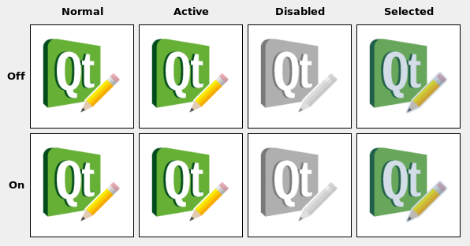

QIcon Class
The QIcon class provides scalable icons in different modes and states. More...
| Header: | #include <QIcon> |
| CMake: | find_package(Qt6 REQUIRED COMPONENTS Gui) target_link_libraries(mytarget PRIVATE Qt6::Gui) |
| qmake: | QT += gui |
- List of all members, including inherited members
- Deprecated members
- QIcon is part of Painting Classes and Implicitly Shared Classes.
Public Types
| enum | Mode { Normal, Disabled, Active, Selected } |
| enum | State { Off, On } |
(since 6.7) enum class | ThemeIcon { AddressBookNew, ApplicationExit, AppointmentNew, CallStart, CallStop, …, WeatherStorm } |
Public Functions
| QIcon() | |
| QIcon(const QPixmap &pixmap) | |
| QIcon(const QString &fileName) | |
| QIcon(QIconEngine *engine) | |
| QIcon(const QIcon &other) | |
| QIcon(QIcon &&other) | |
| ~QIcon() | |
| QSize | actualSize(const QSize &size, QIcon::Mode mode = Normal, QIcon::State state = Off) const |
| void | addFile(const QString &fileName, const QSize &size = QSize(), QIcon::Mode mode = Normal, QIcon::State state = Off) |
| void | addPixmap(const QPixmap &pixmap, QIcon::Mode mode = Normal, QIcon::State state = Off) |
| QList<QSize> | availableSizes(QIcon::Mode mode = Normal, QIcon::State state = Off) const |
| qint64 | cacheKey() const |
| bool | isMask() const |
| bool | isNull() const |
| QString | name() const |
| void | paint(QPainter *painter, const QRect &rect, Qt::Alignment alignment = Qt::AlignCenter, QIcon::Mode mode = Normal, QIcon::State state = Off) const |
| void | paint(QPainter *painter, int x, int y, int w, int h, Qt::Alignment alignment = Qt::AlignCenter, QIcon::Mode mode = Normal, QIcon::State state = Off) const |
| QPixmap | pixmap(const QSize &size, QIcon::Mode mode = Normal, QIcon::State state = Off) const |
| QPixmap | pixmap(int w, int h, QIcon::Mode mode = Normal, QIcon::State state = Off) const |
| QPixmap | pixmap(int extent, QIcon::Mode mode = Normal, QIcon::State state = Off) const |
(since 6.0) QPixmap | pixmap(const QSize &size, qreal devicePixelRatio, QIcon::Mode mode = Normal, QIcon::State state = Off) const |
| void | setIsMask(bool isMask) |
| void | swap(QIcon &other) |
| QVariant | operator QVariant() const |
| QIcon & | operator=(const QIcon &other) |
| QIcon & | operator=(QIcon &&other) |
Static Public Members
| QStringList | fallbackSearchPaths() |
| QString | fallbackThemeName() |
| QIcon | fromTheme(const QString &name) |
| QIcon | fromTheme(const QString &name, const QIcon &fallback) |
(since 6.7) QIcon | fromTheme(QIcon::ThemeIcon icon) |
(since 6.7) QIcon | fromTheme(QIcon::ThemeIcon icon, const QIcon &fallback) |
| bool | hasThemeIcon(const QString &name) |
(since 6.7) bool | hasThemeIcon(QIcon::ThemeIcon icon) |
| void | setFallbackSearchPaths(const QStringList &paths) |
| void | setFallbackThemeName(const QString &name) |
| void | setThemeName(const QString &name) |
| void | setThemeSearchPaths(const QStringList &paths) |
| QString | themeName() |
| QStringList | themeSearchPaths() |
Related Non-Members
| QDataStream & | operator<<(QDataStream &stream, const QIcon &icon) |
| QDataStream & | operator>>(QDataStream &stream, QIcon &icon) |
Detailed Description
A QIcon can generate smaller, larger, active, and disabled pixmaps from the set of pixmaps it is given. Such pixmaps are used by Qt UI components to show an icon representing a particular action.
Creating an icon from image files
The simplest way to construct a QIcon is to create one from one or several image files or resources. For example:
QToolButton *button = new QToolButton; button->setIcon(QIcon("open.png"));
QIcon can store several images for different states, and Qt will select the image that is the closest match for the action's current state.
QIcon openIcon("open.png"); openIcon.addFile("open-disabled.png", QIcon::Disabled);
Qt will generate the required icon styles and sizes when needed, e.g. the pixmap for the QIcon::Disabled state might be generated by graying out one of the provided pixmaps.
To clear the icon, simply set a null icon in its place:
button->setIcon(QIcon());
Use the QImageReader::supportedImageFormats() and QImageWriter::supportedImageFormats() functions to retrieve a complete list of the supported file formats.
Creating an icon from a theme or icon library
The most convenient way to construct an icon is by using the fromTheme() factory function. Qt implements access to the native icon library on platforms that support the Freedesktop Icon Theme Specification. Since Qt 6.7, Qt also provides access to the native icon library on macOS, iOS, and Windows 10 and 11. On Android, Qt can access icons from the Material design system as long as the MaterialIcons-Regular font is available on the system, or bundled as a resource at :/qt-project.org/icons/MaterialIcons-Regular.ttf with the application.
QIcon undoicon = QIcon::fromTheme(QIcon::ThemeIcon::EditUndo);
Applications can use the same theming specification to provide their own icon library. See below for an example theme description and the corresponding directory structure for the image files. Icons from an application-provided theme take precedence over the native icon library.
In addition, it is possible to provide custom icon engines. This allows applications to customize every aspect of generated icons. With QIconEnginePlugin it is possible to register different icon engines for different file suffixes, making it possible for third parties to provide additional icon engines to those included with Qt.
Making Classes that Use QIcon
If you write your own widgets that have an option to set a small pixmap, consider allowing a QIcon to be set for that pixmap. The Qt class QToolButton is an example of such a widget.
Provide a method to set a QIcon, and paint the QIcon with paint, choosing the appropriate parameters based on the current state of your widget. For example:
void MyWidget::drawIcon(QPainter *painter, const QRect &rect) { icon.paint(painter, rect, Qt::AlignCenter, isEnabled() ? QIcon::Normal : QIcon::Disabled, isChecked() ? QIcon::On : QIcon::Off); }
When you retrieve a pixmap using pixmap(QSize, Mode, State), and no pixmap for this given size, mode and state has been added with addFile() or addPixmap(), then QIcon will generate one on the fly. This pixmap generation happens in a QIconEngine. The default engine scales pixmaps down if required, but never up, and it uses the current style to calculate a disabled appearance.
You might also make use of the Active mode, perhaps making your widget Active when the mouse is over the widget (see QWidget::enterEvent()), while the mouse is pressed pending the release that will activate the function, or when it is the currently selected item. If the widget can be toggled, the "On" mode might be used to draw a different icon.

Note: QIcon needs a QGuiApplication instance before the icon is created.
High DPI Icons
Icons that are provided by the native icon library are usually based on vector graphics, and will automatically be rendered in the appropriate resolution.
When providing your own image files via addFile(), then QIcon will use Qt's "@nx" high DPI syntax. This is useful if you have your own custom directory structure and do not use follow Freedesktop Icon Theme Specification.
When providing an application theme, then you need to follow the Icon Theme Specification to specify which files to use for different resolutions. To make QIcon use the high DPI version of an image, add an additional entry to the appropriate index.theme file:
[Icon Theme] Name=Test Comment=Test Theme Directories=32x32/actions,32x32@2/actions [32x32/actions] Size=32 Context=Actions Type=Fixed # High DPI version of the entry above. [32x32@2/actions] Size=32 Scale=2 Type=Fixed
Your icon theme directory would then look something like this:
├── 32x32 │ └── actions │ └── appointment-new.png ├── 32x32@2 │ └── actions │ └── appointment-new.png └── index.theme
Member Type Documentation
enum QIcon::Mode
This enum type describes the mode for which a pixmap is intended to be used. The currently defined modes are:
| Constant | Value | Description |
|---|---|---|
QIcon::Normal | 0 | Display the pixmap when the user is not interacting with the icon, but the functionality represented by the icon is available. |
QIcon::Disabled | 1 | Display the pixmap when the functionality represented by the icon is not available. |
QIcon::Active | 2 | Display the pixmap when the functionality represented by the icon is available and the user is interacting with the icon, for example, moving the mouse over it or clicking it. |
QIcon::Selected | 3 | Display the pixmap when the item represented by the icon is selected. |
enum QIcon::State
This enum describes the state for which a pixmap is intended to be used. The state can be:
| Constant | Value | Description |
|---|---|---|
QIcon::Off | 1 | Display the pixmap when the widget is in an "off" state |
QIcon::On | 0 | Display the pixmap when the widget is in an "on" state |
[since 6.7] enum class QIcon::ThemeIcon
This enum provides access to icons that are provided by most icon theme implementations.
| Constant | Value | Description |
|---|---|---|
QIcon::ThemeIcon::AddressBookNew | 0 | The icon for the action to create a new address book. |
QIcon::ThemeIcon::ApplicationExit | 1 | The icon for exiting an application. |
QIcon::ThemeIcon::AppointmentNew | 2 | The icon for the action to create a new appointment. |
QIcon::ThemeIcon::CallStart | 3 | The icon for initiating or accepting a call. |
QIcon::ThemeIcon::CallStop | 4 | The icon for stopping a current call. |
QIcon::ThemeIcon::ContactNew | 5 | The icon for the action to create a new contact. |
QIcon::ThemeIcon::DocumentNew | 6 | The icon for the action to create a new document. |
QIcon::ThemeIcon::DocumentOpen | 7 | The icon for the action to open a document. |
QIcon::ThemeIcon::DocumentOpenRecent | 8 | The icon for the action to open a document that was recently opened. |
QIcon::ThemeIcon::DocumentPageSetup | 9 | The icon for the page setup action. |
QIcon::ThemeIcon::DocumentPrint | 10 | The icon for the print action. |
QIcon::ThemeIcon::DocumentPrintPreview | 11 | The icon for the print preview action. |
QIcon::ThemeIcon::DocumentProperties | 12 | The icon for the action to view the properties of a document. |
QIcon::ThemeIcon::DocumentRevert | 13 | The icon for the action of reverting to a previous version of a document. |
QIcon::ThemeIcon::DocumentSave | 14 | The icon for the save action. |
QIcon::ThemeIcon::DocumentSaveAs | 15 | The icon for the save as action. |
QIcon::ThemeIcon::DocumentSend | 16 | The icon for the send action. |
QIcon::ThemeIcon::EditClear | 17 | The icon for the clear action. |
QIcon::ThemeIcon::EditCopy | 18 | The icon for the copy action. |
QIcon::ThemeIcon::EditCut | 19 | The icon for the cut action. |
QIcon::ThemeIcon::EditDelete | 20 | The icon for the delete action. |
QIcon::ThemeIcon::EditFind | 21 | The icon for the find action. |
QIcon::ThemeIcon::EditPaste | 22 | The icon for the paste action. |
QIcon::ThemeIcon::EditRedo | 23 | The icon for the redo action. |
QIcon::ThemeIcon::EditSelectAll | 24 | The icon for the select all action. |
QIcon::ThemeIcon::EditUndo | 25 | The icon for the undo action. |
QIcon::ThemeIcon::FolderNew | 26 | The icon for creating a new folder. |
QIcon::ThemeIcon::FormatIndentLess | 27 | The icon for the decrease indent formatting action. |
QIcon::ThemeIcon::FormatIndentMore | 28 | The icon for the increase indent formatting action. |
QIcon::ThemeIcon::FormatJustifyCenter | 29 | The icon for the center justification formatting action. |
QIcon::ThemeIcon::FormatJustifyFill | 30 | The icon for the fill justification formatting action. |
QIcon::ThemeIcon::FormatJustifyLeft | 31 | The icon for the left justification formatting action. |
QIcon::ThemeIcon::FormatJustifyRight | 32 | The icon for the right justification action. |
QIcon::ThemeIcon::FormatTextDirectionLtr | 33 | The icon for the left-to-right text formatting action. |
QIcon::ThemeIcon::FormatTextDirectionRtl | 34 | The icon for the right-to-left formatting action. |
QIcon::ThemeIcon::FormatTextBold | 35 | The icon for the bold text formatting action. |
QIcon::ThemeIcon::FormatTextItalic | 36 | The icon for the italic text formatting action. |
QIcon::ThemeIcon::FormatTextUnderline | 37 | The icon for the underlined text formatting action. |
QIcon::ThemeIcon::FormatTextStrikethrough | 38 | The icon for the strikethrough text formatting action. |
QIcon::ThemeIcon::GoDown | 39 | The icon for the go down in a list action. |
QIcon::ThemeIcon::GoHome | 40 | The icon for the go to home location action. |
QIcon::ThemeIcon::GoNext | 41 | The icon for the go to the next item in a list action. |
QIcon::ThemeIcon::GoPrevious | 42 | The icon for the go to the previous item in a list action. |
QIcon::ThemeIcon::GoUp | 43 | The icon for the go up in a list action. |
QIcon::ThemeIcon::HelpAbout | 44 | The icon for the About item in the Help menu. |
QIcon::ThemeIcon::HelpFaq | 45 | The icon for the FAQ item in the Help menu. |
QIcon::ThemeIcon::InsertImage | 46 | The icon for the insert image action of an application. |
QIcon::ThemeIcon::InsertLink | 47 | The icon for the insert link action of an application. |
QIcon::ThemeIcon::InsertText | 48 | The icon for the insert text action of an application. |
QIcon::ThemeIcon::ListAdd | 49 | The icon for the add to list action. |
QIcon::ThemeIcon::ListRemove | 50 | The icon for the remove from list action. |
QIcon::ThemeIcon::MailForward | 51 | The icon for the forward action. |
QIcon::ThemeIcon::MailMarkImportant | 52 | The icon for the mark as important action. |
QIcon::ThemeIcon::MailMarkRead | 53 | The icon for the mark as read action. |
QIcon::ThemeIcon::MailMarkUnread | 54 | The icon for the mark as unread action. |
QIcon::ThemeIcon::MailMessageNew | 55 | The icon for the compose new mail action. |
QIcon::ThemeIcon::MailReplyAll | 56 | The icon for the reply to all action. |
QIcon::ThemeIcon::MailReplySender | 57 | The icon for the reply to sender action. |
QIcon::ThemeIcon::MailSend | 58 | The icon for the send action. |
QIcon::ThemeIcon::MediaEject | 59 | The icon for the eject action of a media player or file manager. |
QIcon::ThemeIcon::MediaPlaybackPause | 60 | The icon for the pause action of a media player. |
QIcon::ThemeIcon::MediaPlaybackStart | 61 | The icon for the start playback action of a media player. |
QIcon::ThemeIcon::MediaPlaybackStop | 62 | The icon for the stop action of a media player. |
QIcon::ThemeIcon::MediaRecord | 63 | The icon for the record action of a media application. |
QIcon::ThemeIcon::MediaSeekBackward | 64 | The icon for the seek backward action of a media player. |
QIcon::ThemeIcon::MediaSeekForward | 65 | The icon for the seek forward action of a media player. |
QIcon::ThemeIcon::MediaSkipBackward | 66 | The icon for the skip backward action of a media player. |
QIcon::ThemeIcon::MediaSkipForward | 67 | The icon for the skip forward action of a media player. |
QIcon::ThemeIcon::ObjectRotateLeft | 68 | The icon for the rotate left action performed on an object. |
QIcon::ThemeIcon::ObjectRotateRight | 69 | The icon for the rotate right action performed on an object. |
QIcon::ThemeIcon::ProcessStop | 70 | The icon for the stop action in applications with actions that may take a while to process, such as web page loading in a browser. |
QIcon::ThemeIcon::SystemLockScreen | 71 | The icon for the lock screen action. |
QIcon::ThemeIcon::SystemLogOut | 72 | The icon for the log out action. |
QIcon::ThemeIcon::SystemSearch | 73 | The icon for the search action. |
QIcon::ThemeIcon::SystemReboot | 74 | The icon for the reboot action. |
QIcon::ThemeIcon::SystemShutdown | 75 | The icon for the shutdown action. |
QIcon::ThemeIcon::ToolsCheckSpelling | 76 | The icon for the check spelling action. |
QIcon::ThemeIcon::ViewFullscreen | 77 | The icon for the fullscreen action. |
QIcon::ThemeIcon::ViewRefresh | 78 | The icon for the refresh action. |
QIcon::ThemeIcon::ViewRestore | 79 | The icon for leaving the fullscreen view. |
QIcon::ThemeIcon::WindowClose | 80 | The icon for the close window action. |
QIcon::ThemeIcon::WindowNew | 81 | The icon for the new window action. |
QIcon::ThemeIcon::ZoomFitBest | 82 | The icon for the best fit action. |
QIcon::ThemeIcon::ZoomIn | 83 | The icon for the zoom in action. |
QIcon::ThemeIcon::ZoomOut | 84 | The icon for the zoom out action. |
QIcon::ThemeIcon::AudioCard | 85 | The icon for the audio rendering device. |
QIcon::ThemeIcon::AudioInputMicrophone | 86 | The icon for the microphone audio input device. |
QIcon::ThemeIcon::Battery | 87 | The icon for the system battery device. |
QIcon::ThemeIcon::CameraPhoto | 88 | The icon for a digital still camera devices. |
QIcon::ThemeIcon::CameraVideo | 89 | The icon for a video camera device. |
QIcon::ThemeIcon::CameraWeb | 90 | The icon for a web camera device. |
QIcon::ThemeIcon::Computer | 91 | The icon for the computing device as a whole. |
QIcon::ThemeIcon::DriveHarddisk | 92 | The icon for hard disk drives. |
QIcon::ThemeIcon::DriveOptical | 93 | The icon for optical media drives such as CD and DVD. |
QIcon::ThemeIcon::InputGaming | 94 | The icon for the gaming input device. |
QIcon::ThemeIcon::InputKeyboard | 95 | The icon for the keyboard input device. |
QIcon::ThemeIcon::InputMouse | 96 | The icon for the mousing input device. |
QIcon::ThemeIcon::InputTablet | 97 | The icon for graphics tablet input devices. |
QIcon::ThemeIcon::MediaFlash | 98 | The icon for flash media, such as a memory stick. |
QIcon::ThemeIcon::MediaOptical | 99 | The icon for physical optical media such as CD and DVD. |
QIcon::ThemeIcon::MediaTape | 100 | The icon for generic physical tape media. |
QIcon::ThemeIcon::MultimediaPlayer | 101 | The icon for generic multimedia playing devices. |
QIcon::ThemeIcon::NetworkWired | 102 | The icon for wired network connections. |
QIcon::ThemeIcon::NetworkWireless | 103 | The icon for wireless network connections. |
QIcon::ThemeIcon::Phone | 104 | The icon for phone devices. |
QIcon::ThemeIcon::Printer | 105 | The icon for a printer device. |
QIcon::ThemeIcon::Scanner | 106 | The icon for a scanner device. |
QIcon::ThemeIcon::VideoDisplay | 107 | The icon for the monitor that video gets displayed on. |
QIcon::ThemeIcon::AppointmentMissed | 108 | The icon for when an appointment was missed. |
QIcon::ThemeIcon::AppointmentSoon | 109 | The icon for when an appointment will occur soon. |
QIcon::ThemeIcon::AudioVolumeHigh | 110 | The icon used to indicate high audio volume. |
QIcon::ThemeIcon::AudioVolumeLow | 111 | The icon used to indicate low audio volume. |
QIcon::ThemeIcon::AudioVolumeMedium | 112 | The icon used to indicate medium audio volume. |
QIcon::ThemeIcon::AudioVolumeMuted | 113 | The icon used to indicate the muted state for audio playback. |
QIcon::ThemeIcon::BatteryCaution | 114 | The icon used when the battery is below 40%. |
QIcon::ThemeIcon::BatteryLow | 115 | The icon used when the battery is below 20%. |
QIcon::ThemeIcon::DialogError | 116 | The icon used when a dialog is opened to explain an error condition to the user. |
QIcon::ThemeIcon::DialogInformation | 117 | The icon used when a dialog is opened to give information to the user that may be pertinent to the requested action. |
QIcon::ThemeIcon::DialogPassword | 118 | The icon used when a dialog requesting the authentication credentials for a user is opened. |
QIcon::ThemeIcon::DialogQuestion | 119 | The icon used when a dialog is opened to ask a simple question to the user. |
QIcon::ThemeIcon::DialogWarning | 120 | The icon used when a dialog is opened to warn the user of impending issues with the requested action. |
QIcon::ThemeIcon::FolderDragAccept | 121 | The icon used for a folder while an acceptable object is being dragged onto it. |
QIcon::ThemeIcon::FolderOpen | 122 | The icon used for folders, while their contents are being displayed within the same window. |
QIcon::ThemeIcon::FolderVisiting | 123 | The icon used for folders, while their contents are being displayed in another window. |
QIcon::ThemeIcon::ImageLoading | 124 | The icon used while another image is being loaded. |
QIcon::ThemeIcon::ImageMissing | 125 | The icon used when another image could not be loaded. |
QIcon::ThemeIcon::MailAttachment | 126 | The icon for a message that contains attachments. |
QIcon::ThemeIcon::MailUnread | 127 | The icon for an unread message. |
QIcon::ThemeIcon::MailRead | 128 | The icon for a read message. |
QIcon::ThemeIcon::MailReplied | 129 | The icon for a message that has been replied to. |
QIcon::ThemeIcon::MediaPlaylistRepeat | 130 | The icon for the repeat mode of a media player. |
QIcon::ThemeIcon::MediaPlaylistShuffle | 131 | The icon for the shuffle mode of a media player. |
QIcon::ThemeIcon::NetworkOffline | 132 | The icon used to indicate that the device is not connected to the network. |
QIcon::ThemeIcon::PrinterPrinting | 133 | The icon used while a print job is successfully being spooled to a printing device. |
QIcon::ThemeIcon::SecurityHigh | 134 | The icon used to indicate that the security level of an item is known to be high. |
QIcon::ThemeIcon::SecurityLow | 135 | The icon used to indicate that the security level of an item is known to be low. |
QIcon::ThemeIcon::SoftwareUpdateAvailable | 136 | The icon used to indicate that an update is available. |
QIcon::ThemeIcon::SoftwareUpdateUrgent | 137 | The icon used to indicate that an urgent update is available. |
QIcon::ThemeIcon::SyncError | 138 | The icon used when an error occurs while attempting to synchronize data across devices. |
QIcon::ThemeIcon::SyncSynchronizing | 139 | The icon used while data is successfully synchronizing across devices. |
QIcon::ThemeIcon::UserAvailable | 140 | The icon used to indicate that a user is available. |
QIcon::ThemeIcon::UserOffline | 141 | The icon used to indicate that a user is not available. |
QIcon::ThemeIcon::WeatherClear | 142 | The icon used to indicate that the sky is clear. |
QIcon::ThemeIcon::WeatherClearNight | 143 | The icon used to indicate that the sky is clear during the night. |
QIcon::ThemeIcon::WeatherFewClouds | 144 | The icon used to indicate that the sky is partly cloudy. |
QIcon::ThemeIcon::WeatherFewCloudsNight | 145 | The icon used to indicate that the sky is partly cloudy during the night. |
QIcon::ThemeIcon::WeatherFog | 146 | The icon used to indicate that the weather is foggy. |
QIcon::ThemeIcon::WeatherShowers | 147 | The icon used to indicate that rain showers are occurring. |
QIcon::ThemeIcon::WeatherSnow | 148 | The icon used to indicate that snow is falling. |
QIcon::ThemeIcon::WeatherStorm | 149 | The icon used to indicate that the weather is stormy. |
This enum was introduced in Qt 6.7.
See also QIcon#Creating an icon from a theme or icon library and fromTheme().
Member Function Documentation
[static, since 6.7] QIcon QIcon::fromTheme(QIcon::ThemeIcon icon)
[static, since 6.7] QIcon QIcon::fromTheme(QIcon::ThemeIcon icon, const QIcon &fallback)
This is an overloaded function.
Returns the QIcon corresponding to icon in the current icon theme.
If the current theme does not provide an icon for icon, the fallback icon theme is consulted, before falling back to looking up standalone icon files in the fallback icon search path. Finally, the platform's native icon library is consulted.
If no icon is found and a fallback is provided, fallback is returned. This is useful to provide a guaranteed fallback, regardless of whether the current set of icon themes and fallbacks paths support the requested icon.
If no icon is found and no fallback is provided, a default constructed, empty QIcon is returned.
This function was introduced in Qt 6.7.
[noexcept] QIcon::QIcon()
Constructs a null icon.
QIcon::QIcon(const QPixmap &pixmap)
Constructs an icon from a pixmap.
[explicit] QIcon::QIcon(const QString &fileName)
Constructs an icon from the file with the given fileName. The file will be loaded on demand.
If fileName contains a relative path (e.g. the filename only) the relevant file must be found relative to the runtime working directory.
The file name can refer to an actual file on disk or to one of the application's embedded resources. See the Resource System overview for details on how to embed images and other resource files in the application's executable.
Use the QImageReader::supportedImageFormats() and QImageWriter::supportedImageFormats() functions to retrieve a complete list of the supported file formats.
[explicit] QIcon::QIcon(QIconEngine *engine)
Creates an icon with a specific icon engine. The icon takes ownership of the engine.
QIcon::QIcon(const QIcon &other)
Constructs a copy of other. This is very fast.
[noexcept] QIcon::QIcon(QIcon &&other)
Move-constructs a QIcon instance, making it point to the same object that other was pointing to.
[noexcept] QIcon::~QIcon()
Destroys the icon.
QSize QIcon::actualSize(const QSize &size, QIcon::Mode mode = Normal, QIcon::State state = Off) const
Returns the actual size of the icon for the requested size, mode, and state. The result might be smaller than requested, but never larger. The returned size is in device-independent pixels (This is relevant for high-dpi pixmaps.)
See also pixmap() and paint().
void QIcon::addFile(const QString &fileName, const QSize &size = QSize(), QIcon::Mode mode = Normal, QIcon::State state = Off)
Adds an image from the file with the given fileName to the icon, as a specialization for size, mode and state. The file will be loaded on demand. Note: custom icon engines are free to ignore additionally added pixmaps.
If fileName contains a relative path (e.g. the filename only) the relevant file must be found relative to the runtime working directory.
The file name can refer to an actual file on disk or to one of the application's embedded resources. See the Resource System overview for details on how to embed images and other resource files in the application's executable.
Use the QImageReader::supportedImageFormats() and QImageWriter::supportedImageFormats() functions to retrieve a complete list of the supported file formats.
If a high resolution version of the image exists (identified by the suffix @2x on the base name), it is automatically loaded and added with the device pixel ratio set to a value of 2. This can be disabled by setting the environment variable QT_HIGHDPI_DISABLE_2X_IMAGE_LOADING (see QImageReader).
Note: When you add a non-empty filename to a QIcon, the icon becomes non-null, even if the file doesn't exist or points to a corrupt file.
See also addPixmap() and QPixmap::devicePixelRatio().
void QIcon::addPixmap(const QPixmap &pixmap, QIcon::Mode mode = Normal, QIcon::State state = Off)
Adds pixmap to the icon, as a specialization for mode and state.
Custom icon engines are free to ignore additionally added pixmaps.
See also addFile().
QList<QSize> QIcon::availableSizes(QIcon::Mode mode = Normal, QIcon::State state = Off) const
Returns a list of available icon sizes for the specified mode and state.
qint64 QIcon::cacheKey() const
Returns a number that identifies the contents of this QIcon object. Distinct QIcon objects can have the same key if they refer to the same contents.
The cacheKey() will change when the icon is altered via addPixmap() or addFile().
Cache keys are mostly useful in conjunction with caching.
See also QPixmap::cacheKey().
[static] QStringList QIcon::fallbackSearchPaths()
Returns the fallback search paths for icons.
The fallback search paths are consulted for standalone icon files if the current icon theme or fallback icon theme do not provide results for an icon lookup.
If not set, the fallback search paths will be defined by the platform.
See also setFallbackSearchPaths() and themeSearchPaths().
[static] QString QIcon::fallbackThemeName()
Returns the name of the fallback icon theme.
If not set, the fallback icon theme will be defined by the platform.
Note: Platform fallback icon themes are only implemented on Freedesktop based systems at the moment, and the icon theme depends on your desktop settings.
See also setFallbackThemeName() and themeName().
[static] QIcon QIcon::fromTheme(const QString &name)
Returns the QIcon corresponding to name in the current icon theme.
If the current theme does not provide an icon for name, the fallback icon theme is consulted, before falling back to looking up standalone icon files in the fallback icon search path. Finally, the platform's native icon library is consulted.
To fetch an icon from the current icon theme:
QIcon undoicon = QIcon::fromTheme(QIcon::ThemeIcon::EditUndo);
If an icon theme has not been explicitly set via setThemeName() a platform defined icon theme will be used.
See also themeName(), fallbackThemeName(), setThemeName(), themeSearchPaths(), fallbackSearchPaths(), and Freedesktop Icon Naming Specification.
[static] QIcon QIcon::fromTheme(const QString &name, const QIcon &fallback)
This is an overloaded function.
Returns the QIcon corresponding to name in the current icon theme.
If the current theme does not provide an icon for name, the fallback icon theme is consulted, before falling back to looking up standalone icon files in the fallback icon search path. Finally, the platform's native icon library is consulted.
If no icon is found fallback is returned.
This is useful to provide a guaranteed fallback, regardless of whether the current set of icon themes and fallbacks paths support the requested icon.
For example:
QIcon undoicon = QIcon::fromTheme(QIcon::ThemeIcon::EditUndo, QIcon(":/undo.png"));
See also fallbackThemeName() and fallbackSearchPaths().
[static] bool QIcon::hasThemeIcon(const QString &name)
Returns true if there is an icon available for name in the current icon theme or any of the fallbacks, as described by fromTheme(), otherwise returns false.
See also themeSearchPaths(), fromTheme(), and setThemeName().
[static, since 6.7] bool QIcon::hasThemeIcon(QIcon::ThemeIcon icon)
This is an overloaded function.
Returns true if there is an icon available for icon in the current icon theme or any of the fallbacks, as described by fromTheme(), otherwise returns false.
This function was introduced in Qt 6.7.
See also fromTheme().
bool QIcon::isMask() const
Returns true if this icon has been marked as a mask image. Certain platforms render mask icons differently (for example, menu icons on macOS).
See also setIsMask().
bool QIcon::isNull() const
Returns true if the icon is empty; otherwise returns false.
An icon is empty if it has neither a pixmap nor a filename.
Note: Even a non-null icon might not be able to create valid pixmaps, eg. if the file does not exist or cannot be read.
QString QIcon::name() const
Returns the name used to create the icon, if available.
Depending on the way the icon was created, it may have an associated name. This is the case for icons created with fromTheme().
See also fromTheme() and QIconEngine::iconName().
void QIcon::paint(QPainter *painter, const QRect &rect, Qt::Alignment alignment = Qt::AlignCenter, QIcon::Mode mode = Normal, QIcon::State state = Off) const
Uses the painter to paint the icon with specified alignment, required mode, and state into the rectangle rect.
See also actualSize() and pixmap().
void QIcon::paint(QPainter *painter, int x, int y, int w, int h, Qt::Alignment alignment = Qt::AlignCenter, QIcon::Mode mode = Normal, QIcon::State state = Off) const
This is an overloaded function.
Paints the icon into the rectangle QRect(x, y, w, h).
QPixmap QIcon::pixmap(const QSize &size, QIcon::Mode mode = Normal, QIcon::State state = Off) const
Returns a pixmap with the requested size, mode, and state, generating one if necessary. The pixmap might be smaller than requested, but never larger, unless the device-pixel ratio of the returned pixmap is larger than 1.
See also actualSize() and paint().
QPixmap QIcon::pixmap(int w, int h, QIcon::Mode mode = Normal, QIcon::State state = Off) const
This is an overloaded function.
Returns a pixmap of size QSize(w, h). The pixmap might be smaller than requested, but never larger, unless the device-pixel ratio of the returned pixmap is larger than 1.
QPixmap QIcon::pixmap(int extent, QIcon::Mode mode = Normal, QIcon::State state = Off) const
This is an overloaded function.
Returns a pixmap of size QSize(extent, extent). The pixmap might be smaller than requested, but never larger, unless the device-pixel ratio of the returned pixmap is larger than 1.
[since 6.0] QPixmap QIcon::pixmap(const QSize &size, qreal devicePixelRatio, QIcon::Mode mode = Normal, QIcon::State state = Off) const
This is an overloaded function.
Returns a pixmap with the requested size, devicePixelRatio, mode, and state, generating one if necessary.
This function was introduced in Qt 6.0.
See also actualSize() and paint().
[static] void QIcon::setFallbackSearchPaths(const QStringList &paths)
Sets the fallback search paths for icons to paths.
The fallback search paths are consulted for standalone icon files if the current icon theme or fallback icon theme do not provide results for an icon lookup.
For example:
QIcon::setFallbackSearchPaths(QIcon::fallbackSearchPaths() << "my/search/path");
See also fallbackSearchPaths() and setThemeSearchPaths().
[static] void QIcon::setFallbackThemeName(const QString &name)
Sets the fallback icon theme to name.
The fallback icon theme is consulted for icons not provided by the current icon theme, or if the current icon theme does not exist.
The name should correspond to theme in the same format as documented by setThemeName(), and will be looked up in themeSearchPaths().
Note: Fallback icon themes should be set before creating QGuiApplication, to ensure correct initialization.
See also fallbackThemeName(), themeSearchPaths(), and themeName().
void QIcon::setIsMask(bool isMask)
Indicate that this icon is a mask image(boolean isMask), and hence can potentially be modified based on where it's displayed.
See also isMask().
[static] void QIcon::setThemeName(const QString &name)
Sets the current icon theme to name.
The theme will be will be looked up in themeSearchPaths().
At the moment the only supported icon theme format is the Freedesktop Icon Theme Specification. The name should correspond to a directory name in the themeSearchPath() containing an index.theme file describing its contents.
See also themeSearchPaths(), themeName(), and Freedesktop Icon Theme Specification.
[static] void QIcon::setThemeSearchPaths(const QStringList &paths)
Sets the search paths for icon themes to paths.
The content of paths should follow the theme format documented by setThemeName().
See also themeSearchPaths(), fromTheme(), and setThemeName().
[noexcept] void QIcon::swap(QIcon &other)
Swaps icon other with this icon. This operation is very fast and never fails.
[static] QString QIcon::themeName()
Returns the name of the current icon theme.
If not set, the current icon theme will be defined by the platform.
Note: Platform icon themes are only implemented on Freedesktop based systems at the moment, and the icon theme depends on your desktop settings.
See also setThemeName(), themeSearchPaths(), fromTheme(), and hasThemeIcon().
[static] QStringList QIcon::themeSearchPaths()
Returns the search paths for icon themes.
The default search paths will be defined by the platform. All platforms will also have the resource directory :\icons as a fallback.
See also setThemeSearchPaths(), fromTheme(), and setThemeName().
QVariant QIcon::operator QVariant() const
Returns the icon as a QVariant.
QIcon &QIcon::operator=(const QIcon &other)
Assigns the other icon to this icon and returns a reference to this icon.
[noexcept] QIcon &QIcon::operator=(QIcon &&other)
Move-assigns other to this QIcon instance.
Related Non-Members
QDataStream &operator<<(QDataStream &stream, const QIcon &icon)
Writes the given icon to the given stream as a PNG image. If the icon contains more than one image, all images will be written to the stream. Note that writing the stream to a file will not produce a valid image file.
QDataStream &operator>>(QDataStream &stream, QIcon &icon)
Reads an image, or a set of images, from the given stream into the given icon.